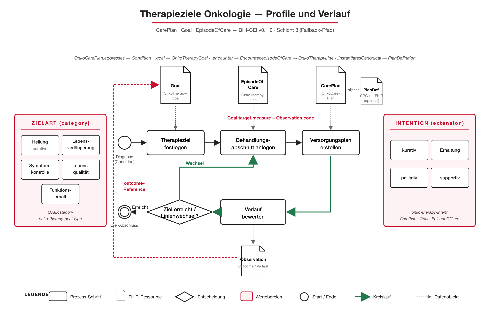

Implementierungsleitfaden Therapieziele Onkologie - Local Development build (v1.0.0-ballot) built by the FHIR (HL7® FHIR® Standard) Build Tools. See the Directory of published versions
Dieser Implementierungsleitfaden definiert FHIR-Profile zur Dokumentation onkologischer Therapieziele — also der Ziele, die Patient:innen und behandelndes Team gemeinsam festlegen, wenn ein Tumortherapieplan aufgestellt wird (z. B. kurative Intention, Lebensverlängerung, Symptomkontrolle, Lebensqualität).
Er entsteht im Rahmen der BIH-CEI / Gematik-Onkologie-Kooperation und wird auf Deutsch mit englischer Übersetzung veröffentlicht.
Profile und Verlauf im Überblick
Erste Profile

Der initiale Profilsatz folgt der im Analysebericht festgelegten Vier-Schichten-Architektur und bildet den CarePlan-/Goal-Fallback-Pfad ab:
OnkoCarePlan — onkologischer Versorgungsplan mit Therapieintention, adressierter Tumorerkrankung und Bezug zu Therapielinien.
OnkoTherapyLine — Therapielinie (EnLiST-konform) als Behandlungsabschnitt mit eigener Intention.